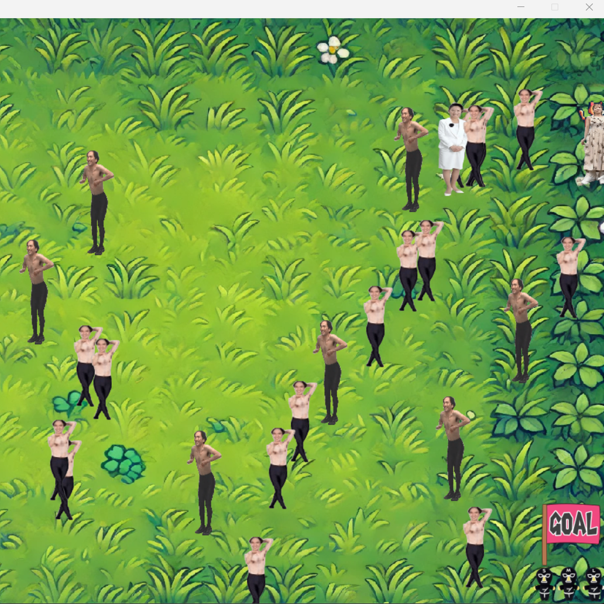
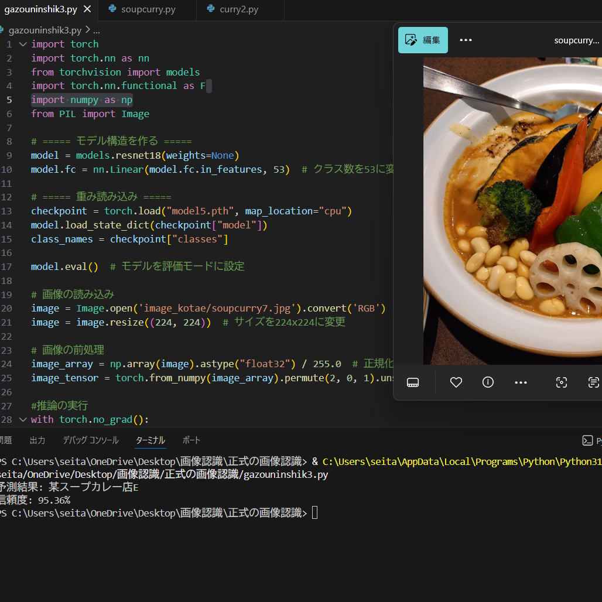
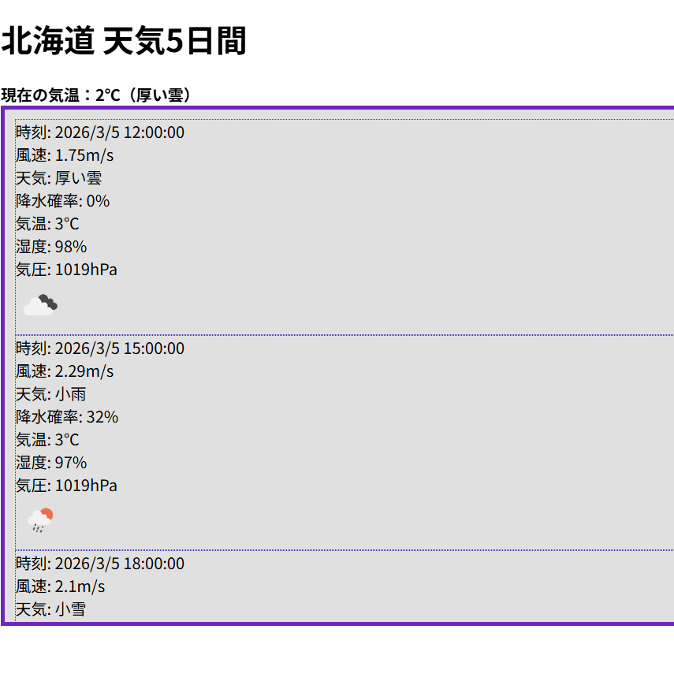

実装サンプル
Sample
画像ギャラリー

開発環境
日々の学習と開発を象徴するイメージです。 コードを書く時間を積み重ねることを大切にしています。
作業環境
集中して課題に取り組む環境を表現しています。 問題解決のために冷静に向き合う姿勢を大切にしています。
ITの世界
ITの可能性と未来への挑戦をイメージしています。 新しい技術にも積極的に取り組んでいます。

論理的思考
回路のように整理された設計を目指しています。 ユーザーにとって使いやすいシステムを作れるように努めています。
作品集
Python: 江頭よけゲーム

Pygameを使用して作成したアクションゲームです。 ランダムに動くキャラクターを避けながらゴールを目指す仕様にしました。 衝突判定やキャラクターのランダム移動を工夫しました。
Python：スープカレー画像認識AI

スープカレーの画像認識精度を高めるため、角度や明るさが異なる画像データを用意して学習させました。 また、画像サイズを統一しデータを整理することで、安定した認識結果が得られるよう工夫しました。 ただし、店舗名は公開ポートフォリオのため匿名化しています。
JavaScript: 5日間天気予報アプリ

OpenWeather APIを使用した天気予報Webアプリを制作しました。 JavaScriptのfetchを使い、APIから天気データを取得しています。 現在地を取得できるように設定して、現在の気温・湿度・天気アイコンを表示する仕様にしました。